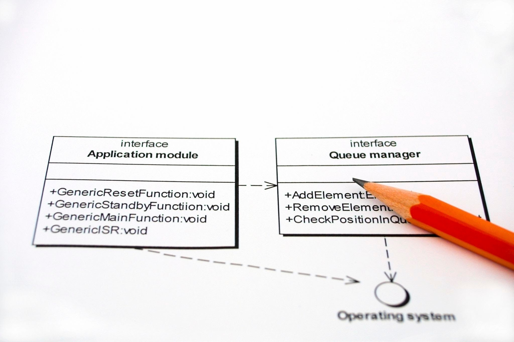

2.5 Diseño de Pipelines Escalables con SOLID#
¿Por qué se rompen los procesos de ETL (Extracción, Transformación y Carga) cuando el negocio pide un cambio pequeño? Generalmente, porque el código está “muy acoplado”: mover una pieza hace caer a las demás.
Los principios SOLID (postulados por Robert C. Martin) son 5 reglas de oro para diseñar software que resista el cambio. Vamos a ver cómo aplican específicamente en el mundo de los Datos.
S - Single Responsibility Principle (SRP)#
“Un módulo debe tener una única razón para cambiar.”
El Problema en BI: Usted tiene un “Script Dios” (etl_ventas.py) que se conecta a la base de datos, limpia nulos, calcula el IVA y envía un correo al gerente.
Si cambia la contraseña de la BD, edita el archivo.
Si el gerente pide cambiar el asunto del correo, edita el mismo archivo.
Riesgo: Al editar el correo, borra sin querer una línea de la conexión a la BD.
La Solución: Dividir en especialistas.
# 1. Responsabilidad: Extraer
class ExtractorVentas:
def obtener_datos(self):
return [100, 200, 300]
# 2. Responsabilidad: Lógica de Negocio
class CalculadoraImpuestos:
def agregar_iva(self, montos):
return [m * 1.19 for m in montos]
# 3. Responsabilidad: Comunicación
class Notificador:
def enviar_alerta(self, mensaje):
print(f"📧 Enviando: {mensaje}")
# Orquestador (Quien une las piezas)
def ejecutar_pipeline():
datos = ExtractorVentas().obtener_datos()
datos_con_iva = CalculadoraImpuestos().agregar_iva(datos)
Notificador().enviar_alerta(f"Procesados {len(datos_con_iva)} registros.")
O - Open/Closed Principle (OCP)#
“Abierto para extensión, cerrado para modificación.”
El Problema en BI: Su jefe le pide exportar el reporte en CSV. A la semana siguiente, en JSON. A la siguiente, en Parquet.
Si usted tiene una función llena de if formato == 'csv': ... elif formato == 'json': ..., cada nuevo formato implica tocar código viejo que ya funcionaba, arriesgando bugs.
La Solución: Polimorfismo. Definimos un “contrato” y creamos nuevas clases para nuevos formatos sin tocar las anteriores.
from abc import ABC, abstractmethod
# El Contrato (Abstract Base Class)
class Exportador(ABC):
@abstractmethod
def guardar(self, datos):
pass
# Extensión 1
class ExportadorCSV(Exportador):
def guardar(self, datos):
print("💾 Guardando en .csv")
# Extensión 2 (Nueva funcionalidad)
class ExportadorJSON(Exportador):
def guardar(self, datos):
print("💾 Guardando en .json")
# El Pipeline no sabe qué formato usa, solo sabe que puede "guardar"
def finalizar_proceso(exportador: Exportador, datos):
exportador.guardar(datos)
# Uso:
finalizar_proceso(ExportadorJSON(), [1, 2, 3])
L - Liskov Substitution Principle (LSP)#
“Las subclases deben ser sustituibles por sus clases base sin romper el programa.”
El Problema en BI: Imagine que tiene una clase padre FuenteDatos que devuelve un DataFrame. Usted crea una hija FuenteAPI que devuelve un Diccionario JSON. Si el pipeline espera un DataFrame y recibe un diccionario, el código explotará (AttributeError: 'dict' has no attribute 'head').
La Regla: Si la clase padre promete devolver un pato, la clase hija no puede devolver un tigre.
La Solución: Estandarizar salidas.
import pandas as pd
class FuenteDatos(ABC):
@abstractmethod
def leer(self) -> pd.DataFrame: # El contrato promete un DataFrame
pass
class FuenteSQL(FuenteDatos):
def leer(self) -> pd.DataFrame:
return pd.DataFrame({"ventas": [10, 20]})
# VIOLACIÓN DE LISKOV (Lo que NO se debe hacer)
class FuenteAPI_Mala(FuenteDatos):
def leer(self):
return {"ventas": [10, 20]} # ❌ Rompe el contrato, devuelve dict
# CUMPLIMIENTO DE LISKOV (Lo correcto)
class FuenteAPI_Buena(FuenteDatos):
def leer(self) -> pd.DataFrame:
json_data = {"ventas": [10, 20]}
return pd.DataFrame(json_data) # ✅ Convierte a DataFrame antes de devolver
I - Interface Segregation Principle (ISP)#
“Los clientes no deben depender de métodos que no usan.”
El Problema en BI: Creamos una “Mega-Interfaz” llamada ConectorDatos que obliga a tener leer_sql, escribir_sql, enviar_email. Si creo una clase para leer un archivo local (LectorCSV), me veo obligado a implementar enviar_email (dejándolo vacío o lanzando error) aunque un CSV no envíe emails. Eso es código sucio.

La Solución: Interfaces pequeñas y específicas.
# Mal diseño: Interfaz gigante
# class ConectorTodoPoderoso(ABC):
# def leer(self): pass
# def escribir(self): pass
# def auditar(self): pass
# Buen diseño: Interfaces segregadas
class Lector(ABC):
@abstractmethod
def leer(self): pass
class Escritor(ABC):
@abstractmethod
def escribir(self, datos): pass
# Ahora puedo tener una clase que SOLO lee (ej. archivo de configuración)
# sin estar obligada a saber cómo escribir.
class ConfigLoader(Lector):
def leer(self):
return "Configuración cargada"
D - Dependency Inversion Principle (DIP)#
“Dependa de abstracciones, no de concreciones.”
Este es el principio más importante para Testing.
El Problema en BI: Si dentro de su clase Reporte usted escribe self.db = MySQLConnection(), su reporte está “casado” con MySQL. Si quiere probar el reporte en su computador local (donde no tiene MySQL instalado), no puede. El código fallará.
La Solución: Inyección de Dependencias. El reporte no crea la conexión, la recibe.
# Abstracción
class BaseDatos(ABC):
@abstractmethod
def obtener_ventas(self): pass
# Concreción 1: La base real
class MySQLProduccion(BaseDatos):
def obtener_ventas(self):
return [100, 500, 200] # Conecta a la BD real
# Concreción 2: Base falsa para pruebas (Mock)
class BaseDatosFalsa(BaseDatos):
def obtener_ventas(self):
return [10, 10, 10] # Datos controlados para testear
# Clase de Alto Nivel
class GeneradorReporte:
# 💉 INYECCIÓN DE DEPENDENCIA: Recibimos la BD, no la creamos adentro
def __init__(self, db: BaseDatos):
self.db = db
def total_ventas(self):
return sum(self.db.obtener_ventas())
# Escenario A: Producción
reporte_real = GeneradorReporte(MySQLProduccion())
# Escenario B: Testing (Sin conexión a internet ni BD)
reporte_test = GeneradorReporte(BaseDatosFalsa())
print(f"Test total: {reporte_test.total_ventas()}") # Funciona perfecto
Resumen: SOLID en el día a día del Ingeniero de Datos#
🔤 Letra |
🧠 Principio |
🏢 Traducción al BI real |
🚀 ¿Cuándo aplicarlo? |
|---|---|---|---|
S |
Single Responsibility |
No mezcles extracción, transformación y envío en el mismo script. Divide capas. |
Cuando un |
O |
Open/Closed |
Nuevas entradas = nuevas clases. No sigas metiendo |
Si vas agregando JSON, Excel, SQL, API, Parquet, etc. |
L |
Liskov Substitution |
Todas las fuentes deberían devolver el mismo tipo, ej. DataFrame. |
Cuando integras SQL + API + archivos en un proceso único. |
I |
Interface Segregation |
No obligues a un conector Read-Only a implementar métodos |
Cuando creas librerías internas o SDKs del equipo. |
D |
Dependency Inversion |
Pasa la conexión o cliente externo como parámetro, no lo construyas adentro. |
Para testear sin acceder a producción y reducir acoplamiento. |